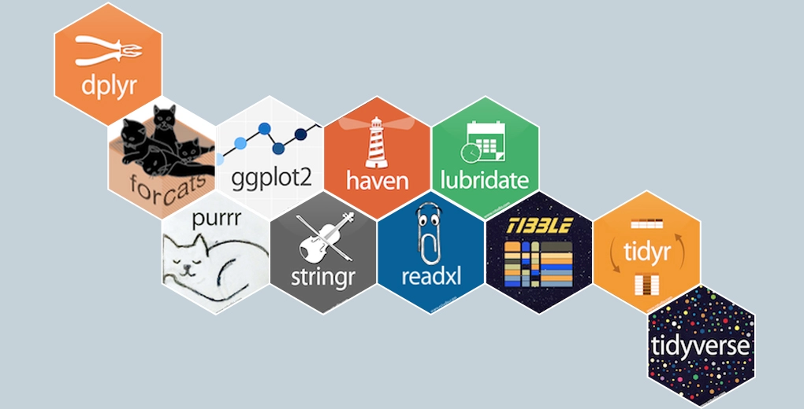

Tidyverse is a collection of essential R packages for data science.
The packages included in the Tidyverse are designed to support the pipeline of activities associated with data science, such as filtering, transforming, visualizing, etc.
Tidyverse was created by Hadley Wickham and his team with the aim of providing all these utilities to clean and work with data.
Here’s a graphic of the packages associated with the Tidyverse:

Dplyr
Dplyr introduces new set of functions that make working with data more intuitive.
It does this by introducing a set of functions that work together well to produce pipelines of actions.
But as important, it introduces a vocabulary for talking about data.
This makes it possible to imagine solutions verbally, and then to implement them in code.
Just a quick note about this odd looking operator that you will start to see.
One of the key elements of the Tidyverse is the use of piping, or the ability of to pass the return values of one function to another, with without have to nest functions.
For example, instead of something like this:
a <-"Hello"b <-"World"var1 <-c(a, b)var2 <-paste(var1)print(var2)
[1] "Hello" "World"
Or this:
print(paste(c(a,b)))
[1] "Hello" "World"
We can do:
c(a, b) %>%paste() %>%print()
[1] "Hello" "World"
Although the last pattern is longer than the preceding, it is much easier to read and write, especially when we are working with several connected functions.
This is similar to method chaining in Python, but is more pervasive.
In Python you can do it with individual objects that return themselves (as it were).
In Tidyverse, you can apply it to any two methods so long as it makes sense to pass the output of as the input of another.
Basically, the output of one function becomes the first argument of the following the %>%.
It is similar to the pipe operator | in Unix shells.
By the way, the operator comes with the magrittr package, which is a central part of the Tidyverse. It is so central, in fact, that packages in the tidyverse load %>% automatically.
It provides a set of operators which make your code more readable.
Tibbles
Dplyr can work with different rectangular data structures:
# A tibble: 6 × 5
a b c d e
<dttm> <date> <int> <dbl> <chr>
1 2023-09-27 13:27:31 2023-10-24 1 0.618 m
2 2023-09-27 23:28:02 2023-09-30 2 0.658 a
3 2023-09-27 22:58:30 2023-10-14 3 0.443 f
4 2023-09-27 20:40:42 2023-10-20 4 0.680 f
5 2023-09-27 11:59:41 2023-10-20 5 0.166 b
6 2023-09-28 00:48:37 2023-10-08 6 0.189 f
Where possible, tibbles also use color to draw your eye to important differences.
One of the most important distinctions is between the string "NA" and the missing value, NA:
tibble(x =c("NA", NA))
# A tibble: 2 × 1
x
<chr>
1 NA
2 <NA>
Tibbles are designed to avoid overwhelming your console when you print large data frames.
But sometimes you need more output than the default display.
There are a few options that can help.
First, you can explicitly print() the data frame and control the number of rows (n) and the width of the display. width = Inf will display all columns:
You can also control the default print behavior by setting options:
options(tibble.print_max = n, tibble.print_min = m): if more than n rows, print only m rows.
Use options(tibble.print_min = Inf) to always show all rows.
Use options(tibble.width = Inf) to always print all columns, regardless of the width of the screen.
You can see a complete list of options by looking at the package help with package?tibble.
Using RStudio View()
A final option is to use RStudio’s built-in data viewer to get a scrollable view of the complete dataset. This is also often useful at the end of a long chain of manipulations.
flights %>%View()
Extracting variables
So far all the tools you’ve learned have worked with complete data frames.
If you want to pull out a single variable, you can use dplyr::pull():
tb <-tibble(id = LETTERS[1:5],x1 =1:5,y1 =6:10)
tb %>%pull(x1) # by name
[1] 1 2 3 4 5
tb %>%pull(1) # by position
[1] "A" "B" "C" "D" "E"
pull() also takes an optional name argument that specifies the column to be used as names for a named vector, which you’ll learn about in ?sec-vectors.
tb %>%pull(x1, name = id)
A B C D E
1 2 3 4 5
You can also use the base R tools $ and [[. [[ can extract by name or position; $ only extracts by name but is a little less typing.
Extract by name:
tb$x1
[1] 1 2 3 4 5
tb[["x1"]]
[1] 1 2 3 4 5
Extract by position:
tb[[1]]
[1] "A" "B" "C" "D" "E"
Compared to a data frame, tibbles are more strict: they never do partial matching, and they will generate a warning if the column you are trying to access does not exist.
# Tibbles complain a lot:tb$x
Warning: Unknown or uninitialised column: `x`.
NULL
tb$z
Warning: Unknown or uninitialised column: `z`.
NULL
# Data frame use partial matching and don't complain if a column doesn't existdf <-as.data.frame(tb)df$x
[1] 1 2 3 4 5
df$z
NULL
For this reason we sometimes joke that tibbles are lazy and surly: they do less and complain more.
Subsetting
Lastly, there are some important differences when using [.
With data.frames, [ sometimes returns a data.frame, and sometimes returns a vector.
This is a common source of bugs.
With tibbles, [ always returns another tibble.
This can sometimes cause problems when working with older code.
If you hit one of those functions, just use as.data.frame() to turn your tibble back to a data.frame.